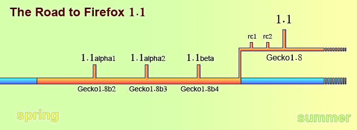

Firefox 2.0/3.0 ロードマップ
Ben Goodger (2005/07/20)
はじめに
2005 年、Firefox は Gecko や XULRunner テクノロジーにとって最も重要な配布手段のひとつとなります。私たちの目標は、Windows、Linux、そして Mac OS X における最高のブラウザ製品を提供し続けることです。私たちは、現在から次のメジャーリリースまでの間の作業について、野心的な目標を立てています。このドキュメントでは、Firefox 2.0 へどのようにたどり着こうと考えているのか、現時点での計画を解説します。今のところまだ短期的なものですが、そのうち 1.0 ロードマップ のように充実させていきます。
体制
私たちは Firefox 2.0、3.0 に向けた計画を立てていますが、予定している作業は (現時点では) 1.5 (2005 年 9 月)、2.0 (未定)、3.0 (未定) という 3 回のメジャーマイルストーンに分ける予定です。主要な開発作業はすべて Mozilla トランク上で行い、3 回のリリースは Gecko のバージョンと同期させます。
マイルストーン計画
いつものことですが、この計画は変更される可能性があります。
| マイルストーン | リリース日 | バグ | 概要 | |
|---|---|---|---|---|
| 1.0 | Phoenix | 2004/11/09 | バグ + - ? | 正式リリース |
| 1.0.1 | Rose & Crown | 2005/02/24 | セキュリティアップデート | |
| 1.0.2 | 2005/03/20 | セキュリティアップデート | ||
| 1.0.3 | 2005/04/15 | セキュリティアップデート | ||
| 1.0.4 | 2005/05/11 | セキュリティアップデート | ||
| 1.0.5 | 2005/07/12 | セキュリティアップデート | ||
| 1.0.6 | 2005/07/19 | API 互換性の修正 | ||
| 1.0.7 | 2005/09/20 | API 互換性の修正 | ||
| 1.1a1 | Deer Park Alpha 1 "Strippenkaart" |
2005/05/31 | バグ | 機能的には未完成な開発者向けプレビュー版 |
| 1.1a2 | Deer Park Alpha 2 | 2005/07/12 | バグ | 機能的には未完成な開発者向けプレビュー版 |
| 1.4 | Firefox 1.5 Beta 1 | 2005/09/08 | バグ | 機能的に完成した一般向けプレビュー版 |
| 1.4.1 | Firefox 1.5 Beta 2 | 2005/10/06 | バグ | 機能的に完成した一般向けプレビュー版 |
| 1.5 | Firefox 1.5 "Deer Park" |
2005/未定 | バグ | Gecko の新バージョン、ヒューマンインターフェースガイドラインへの準拠作業 (進行中)、ソフトウェアアップデートと拡張機能マネージャの改良 |
| 2.0 | "The Ocho" | 2006 | バグ | The Next Big Thing™ |
| 3.0 | 未定 | バグ | The Next Next Big Thing™ | |
いつものことですが、これらの日付は変わる可能性があり、このドキュメントが更新された時点で残っている一連の作業の状況に関する、私たちの統一見解を表したものに過ぎません。
これを図にして表すと、1.5 に向けた計画は次のようになります。

(この図の日付は間違っています)
ネーミングについて...
議論の結果、現在進行中のリリースについては、以下のネーミング構成を取ることにしました。
- 各メジャーリリースにはコードネームを付けます (例: 1.5 は "Deer Park")
- アルファ版には “<コードネーム> alpha” といった名前を付けます
- 公開ベータ版には Firefox 1.5 beta といった名前を付けます
- 最終版には “Firefox <バージョン>” といった名前を付けます
アルファ版はテスト目的のマイルストーンであり、最終版としてリリースされる予定のものではありません。機能が欠けていたり、様々なバグが含まれている可能性があります。開発者やテストコミュニティと協力し、最終版のリリース前に行われるべき主要な変更点について初期のフィードバックを提供してもらい、それを踏まえて開発しようというのが目的です。
ベータ版は機能的には完成しており、リリースしようとしている製品の大体の目安となるものです。これらは、Firefox の次回リリースがどのようなものになるのか見てみたいと考えている、より一般の早期導入者やテスター向けです。最終版のリリース前に修正すべき最も重要な問題に関するフィードバックを得るのが目的です。
リリース候補 (Release Candidates) は、上の各区分や最終版自体をリリースする直前に出される複写版です。通常、リリースの数日あるいは数週間前に投稿し、修正すべき重大なバグがないかどうか確かめます。特に問題がなければ、そのリリース候補を「最終版」としてリリースします。
注意! アルファ版は一般の消費者向けではなく、クラッシュしたり、ブックマークやプロファイル、ハードディスクの内容が失われるといった可能性があります。運良く動作したナイトリービルドとほとんど違いはありません。プレビューリリースについても、バグによる損失を受ける可能性がありますので、リリース前の製品をテストしたい人だけがダウンロードすべきです。
リリース日について...
上に書いた日付は暫定的なもので、各リリースの大まかなスケジュール配分を把握してもらうためのものにすぎません。このドキュメントが最後に更新された時点でのリリース日の予定を示しており、それ以後変わる可能性があります。
目標
私たちは現在も 2.0/3.0 に向けた目標について検討を進めており、開発の性能要件ドキュメントを作成中です。目標に含まれるのは、おそらく次のような分野です。
- ブックマーク・履歴の改良
- サイト別オプション
- 拡張機能システム、検索ツールバー、ソフトウェアアップデート、検索、その他の部分の機能向上
- アクセシビリティ準拠
- その他 ... ?
(注: このリストに挙げたアイテムは、2.0/3.0 まで完成しないということではありません。むしろ 2.0/3.0 までに作業を進めたいもので、1.5 や 2.0、3.0 までに実装される予定です)
ローカライズ
1.0 と同様に、今後のリリースはすべて、リリース時点で準備が整っている様々な言語で利用可能になります。リリースのタイミングに左右されるローカライズやその他の関係者は、最新のリリース時期の目安として このドキュメント を利用してください。
マーケティング
マーケティングは今後も私たちの戦略の重要な位置を占めます。コミュニティマーケティングの取り組みの中心は SpreadFirefox でご覧いただけます。これに加えて、独自の マーケティング資料 の開発も続けていきます。
ブランディング (暫定的なもの)
Firefox 1.5 は「Mozilla Firefox」と呼ばれます。Firefox 2.0 は「Mozilla Firefox 2」と呼ばれる予定です。バージョンの詳細は About (Mozilla Firefox について) ウィンドウに表示されます。
サポートネットワーク
Firefox には、非常に素晴らしいコミュニティ支持者が付いています。私たちは、次の 2 つのサイトを特に強調したいと思います。Mozilla Firefox の拡張機能、テーマ、その他役に立つ情報を幅広く集めている Firefox Help、そして、ユーザや開発者のための主要なディスカッションサイトである MozillaZine フォーラム です。